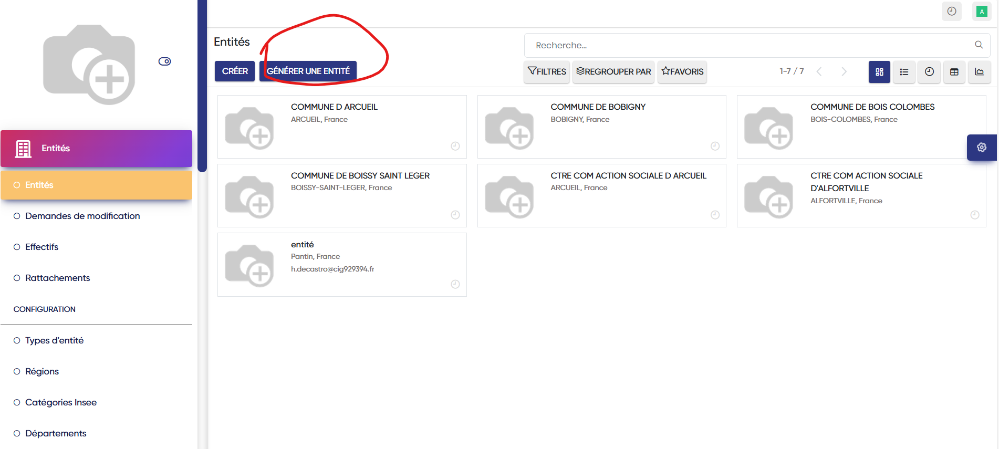
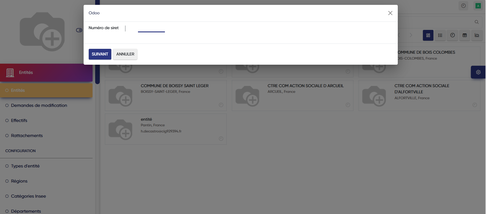
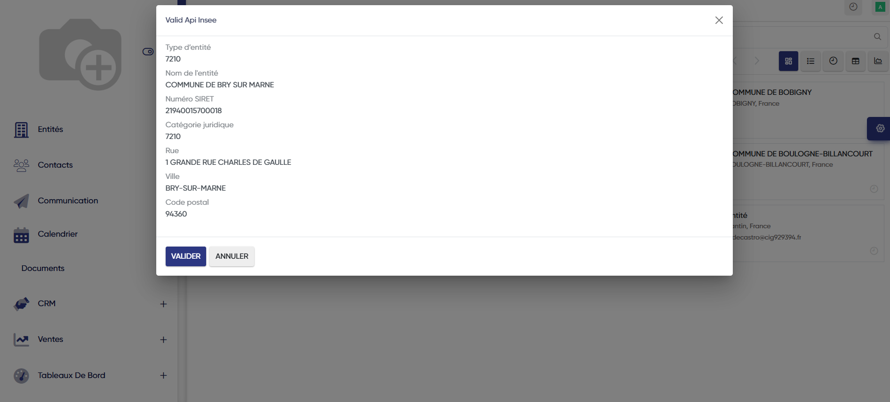
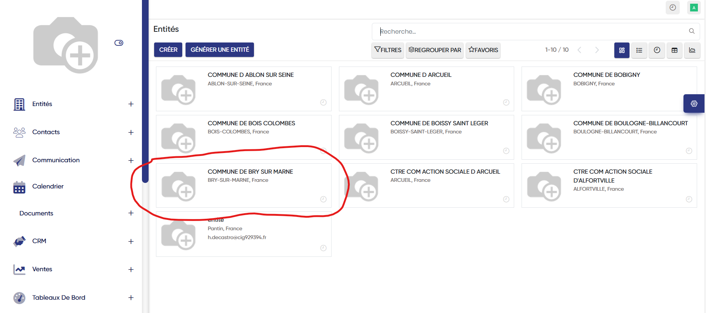
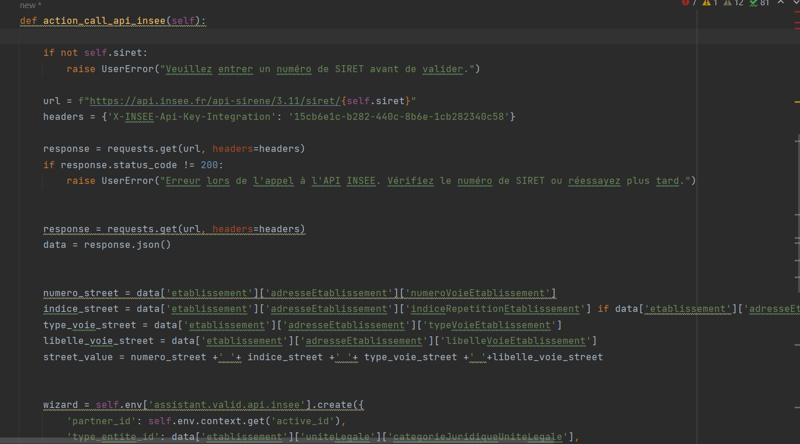

Projet n°5:
Réaliser une connexion avec l'API de l'INSEE, l'API Sirene
Intégration de l’API Sirene de l’INSEE pour permettre à l’utilisateur de saisir un numéro de SIRET et afficher automatiquement les informations complètes de la collectivité (nom, adresse, etc.).
Utilité principale : automatiser la récupération de données fiables sans saisie manuelle, ce qui répond à un besoin concret de nombreuseux centres de gestions : gagner du temps, éviter les erreurs, et faciliter la gestion des entités.
Cela se manifeste par un bouton comme celui-ci:

Un wizard (ou assistant) dans Odoo, c’est une petite fenêtre qui s’ouvre pour guider l’utilisateur étape par étape dans une action.
On a donc le déclechement d'un wizard lors du clique nous indiquant de rentrer le numéro de SIRET:

Une énumération des différentes données grace à l'API Insee, l'utilisateur peut donc valider ou non ces données:

Si l'utilisateur valide celles-ci alors une nouvelle entités est automatiquement crées avec les informations que l'utilisateur aura validé précédemment:

Voici permettant la connexion avec l'API Insee:
